2:5
Skala – Hodkovice 2:5
V posledním podzimním zápase jsme nestačili na Hodkovice, které nás na svém hřišti porazily 5:2.
7. liga VÝCHOD • sezona 2026/27
Fotbal v srdci Českého ráje, mezi skalami a Jizerou. Áčko hraje 7. ligu VÝCHOD Libereckého kraje, béčko okresní 8. ligu. Přijďte nás podpořit k lajně, vesnický fotbal stojí na lidech, kteří fandí.
18. kolo • 7. liga VÝCHOD
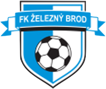
Železný Brod Bneděle 21. 3. 2027 • 15:00 • domácí hřiště
1. kolo • 7. liga VÝCHOD
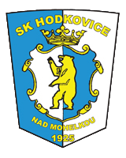
Hodkovicesobota 7. 11. 2026 • 10:00 • Hodkovice nad Mohelkou
Reporty ze zápasů áčka
V posledním podzimním zápase jsme nestačili na Hodkovice, které nás na svém hřišti porazily 5:2.
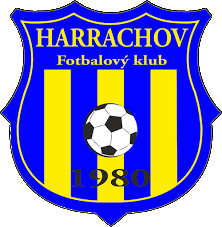
V posledním domácím zápase podzimu jsme v deseti otočili utkání s Harrachovem a vyhráli 2:1 gólem v nastavení.
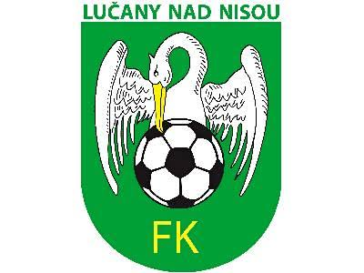
Z Lučan jsme odjeli bez bodu. Domácí vyhráli 2:0 a oba góly vstřelil Jaroslav Lietava.
Sezona 2026/27 • po podzimní části
| # | Klub | Z | V | R | P | Skóre | B | Forma |
|---|---|---|---|---|---|---|---|---|
| 1. | 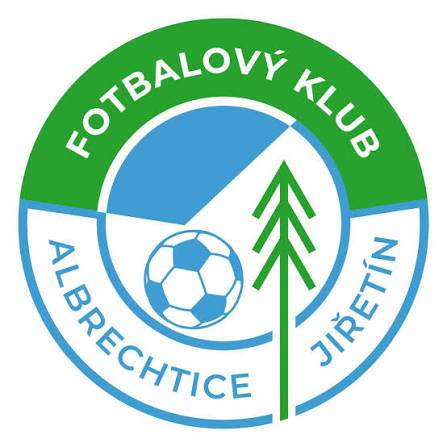 Albrechtice/ |
13 | 12 | 1 | 0 | 45:11 | 37 | VVVVV |
| 2. | 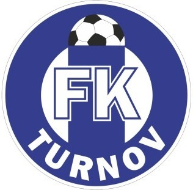 Turnov B |
13 | 10 | 0 | 3 | 66:18 | 30 | VVVPP |
| 3. ▲1 | 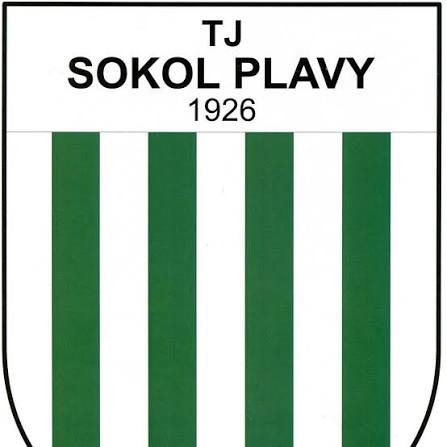 Plavy |
13 | 9 | 0 | 4 | 42:24 | 27 | VVVVV |
| 4. ▼1 | Lučany nad Nisou | 13 | 8 | 1 | 4 | 40:31 | 25 | PPVVV |
| 5. | Železný Brod B | 13 | 8 | 0 | 5 | 52:41 | 24 | VPPPV |
| 6. | 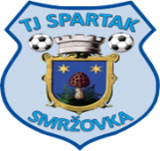 Smržovka |
13 | 7 | 0 | 6 | 38:30 | 21 | VPPPV |
| 7. | Harrachov | 13 | 7 | 0 | 6 | 32:27 | 21 | VPVVV |
| 8. ▲1 | Hodkovice | 13 | 6 | 1 | 6 | 28:28 | 19 | VVVVV |
| 9. ▼1 | 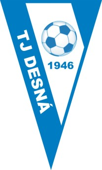 Desná |
13 | 5 | 2 | 6 | 19:30 | 17 | PVPVP |
| 10. | Malá Skála | 13 | 5 | 1 | 7 | 27:39 | 16 | PVPVP |
| 11. | 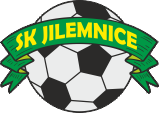 Jilemnice |
13 | 4 | 1 | 8 | 24:43 | 13 | PPVPP |
| 12. | 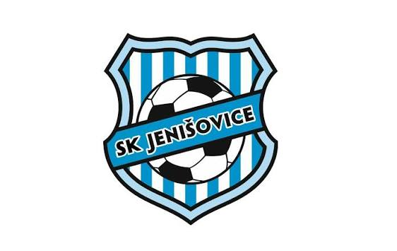 Jenišovice |
13 | 2 | 2 | 9 | 17:40 | 8 | PRPPP |
| 13. | 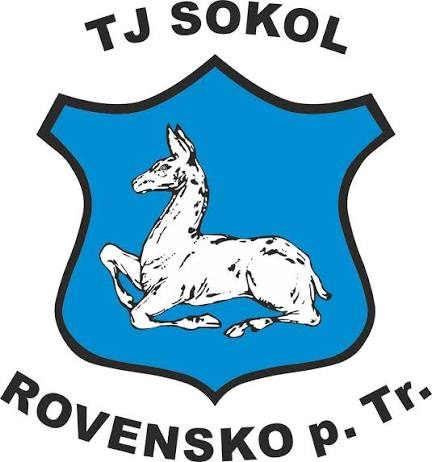 Rovensko pod Troskami |
13 | 1 | 2 | 10 | 18:53 | 5 | PRPPP |
| 14. | 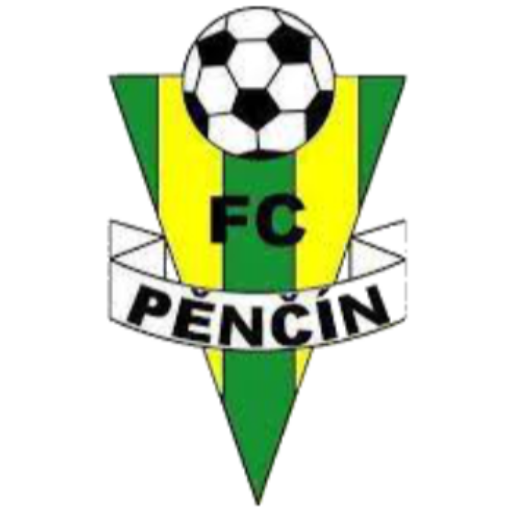 Pěnčín B |
13 | 1 | 1 | 11 | 15:48 | 4 | PPPPP |
Forma: posledních pět zápasů, nejnovější vlevo. V výhra, R remíza, P prohra.
Kompletní tabulka na fotbal.cz →Ne 21. 3. • 18. kolo • doma
Malá Skála – Železný Brod B
So 27. 3. • 19. kolo • venku
Plavy – Malá Skála
Ne 4. 4. • 20. kolo • doma
Malá Skála – Desná
So 10. 4. • 21. kolo • venku
Jilemnice – Malá Skála
Ne 18. 4. • 22. kolo • doma
Malá Skála – Jenišovice
So 7. 11. • 1. kolo • venku
Hodkovice – Malá Skála
Ne 1. 11. • 13. kolo • doma
Malá Skála – Harrachov
So 24. 10. • 12. kolo • venku
Lučany nad Nisou – Malá Skála
Ne 18. 10. • 11. kolo • venku
Pěnčín B – Malá Skála
Ne 11. 10. • 10. kolo • doma
Malá Skála – Smržovka
Sezona 2026/27 • statistiky z podzimní části
Miroslav Hlaváč
Daniel Mohr
Tomáš Rác
1
Jan Konečný
1
Jiří Jiskra
Jiří Šilhán
1
Zdeněk Cafourek
Martin Vít
Tomáš Kratochvíl
Jan Krejčí
4 1
David Pařík
1
Jakub Mikez
Zdeněk Kotrba
5
Michal Matějíček
2
Jan Pešek
1
Petr Hlava
Ondřej Petr
2
Jan Stránský
3
Šimon Mikez
Dominik Plhal
3
Leoš Plátek
Alex Vondál
Petr Srbek
1
Ondřej Hapiak
Milan Drobný
Zdeněk Knobloch
Domácí hřiště • Malá Skála, část Labe
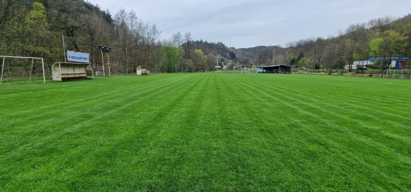
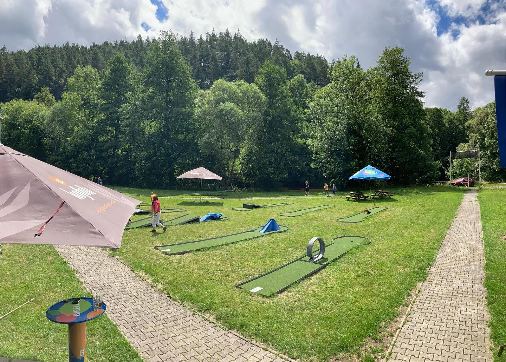
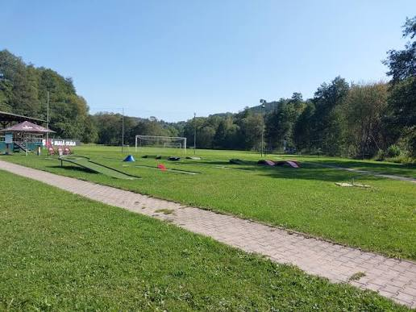
Fotbalové hřiště SK Malá Skála • 1 / 3
Domácí zápasy hrajeme v Malé Skále v části Labe, přímo u hlavní silnice naproti čerpací stanici, takže nás nemůžete minout. Auto zaparkujete přímo v areálu. V klubovně si dáte pivo, limonádu nebo klobásu a s dětmi si můžete zahrát i minigolf, který je součástí areálu. Přijďte na fotbal a zůstaňte na chvíli s námi.
Zavolejte nebo napište
Sledujte nás